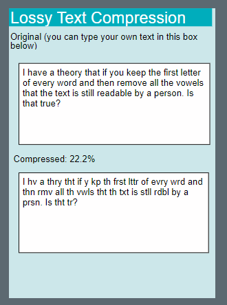
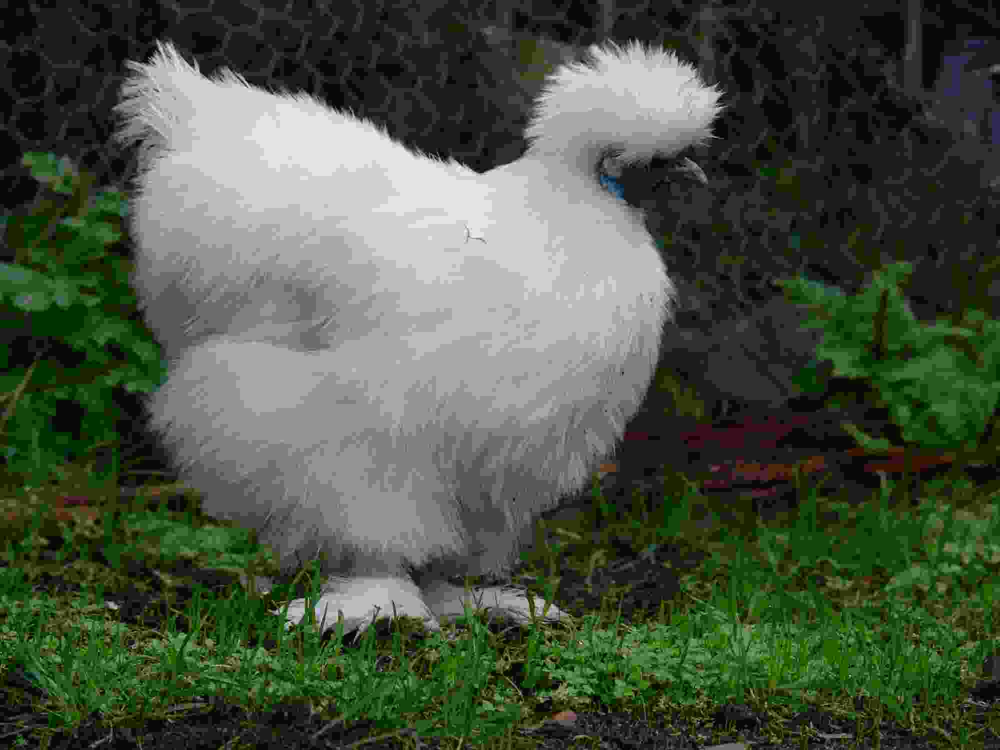

Lesson 8 - Lossy Compression
At the end of this lesson, you will be able to:
- Examine the effects of lossy compression on text & images.
- Given a piece of media, decide whether to use lossy or lossless compression based on the needs of a situation.
Lossy text compression widget
This widget claims you can keep the first letter of a word then remove all of the vowels and the result will still be readable. Let’s test this out - open the Lossy Text Compression Widget and compress a sentence and show it to your family or friends to see if they can guess the original message!

The widget in the last lesson was an example of lossless compression because we could always reverse the process to recreate the original. This widget is an example of lossy compression because some information gets lost, making this process not reversible.
Lossy image compression example
Here's an image of a silky bantam chicken at high quality and with the quality reduced down to nearly as much as possible:


If you download both files and look at them you can see how big of a difference it can make. If you'd like to see some interactive demonstrations of compression (and how to make glitch art by messing with JPGs) click this link: Unraveling the JPG.
Compression decisions
We’ve now seen that lossy compression can greatly reduce the file size of our images, but we lose some information along the way. Let’s explore what this looks like with some common image compressions we use on the internet.
Look at the image below. We are trying to use this image for a particular purpose, and we need to decide which level of compression we want to use. Choose the level you think fits the scenario.
In the next lesson, we will explore ethical and legal issues around our digital information!